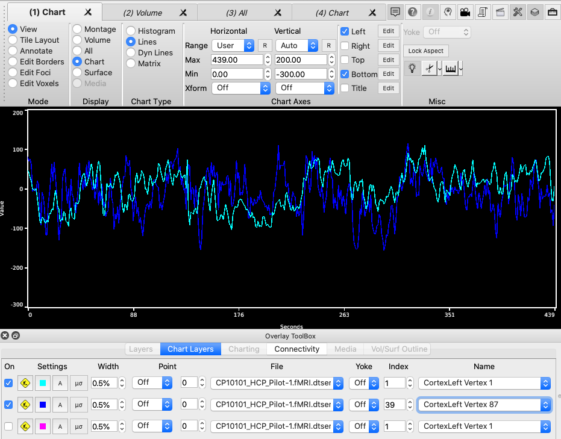

Charting Overview
Significant upgrades to charting are included in the release of Workbench 1.5.0.
These upgrades include the new Lines Chart Type and customizable axes.
Histogram Charts
Histogram charts are available for any data file that contain one or
more maps of scalar data and this includes many CIFTI file types,
GIFTI metric files, and volume files. A histogram shows the
distribution of data within a single map with an option to average
the data from all maps. This map contain the same data that is
mapped to brainordinates in surface and volume views. To view
a histogram chart, change Toolbar->Display mode to Chart and select
Histogram in Toolbar->Chart Type. In Toolbox->Chart
Layers, enable an overlay using an On checkbox and then choose a
file and map for display as a histogram. Multiple histograms
are displayed using multiple layers. When displaying more
than one histogram, one may want to change the histogram chart from
Bars to Envelope by clicking the Layer's wrench button, selecting
the Palette tab, and selecting the appropriate check boxes in the
Histogram section. There are a variety of additional options
for controlling the display of histograms.


Dyn (Dynamic) Lines Charts
A dynami lines chart shows one
data element from each map for a selected brainordinate (identified surface
vertex or volume voxel). To display dynamic lines charts from a
data-file, one must enable the layer by checking both the On checkbox and
the Load checkbox. Note that the Load checkbox is a property of
the file so if the same file is in more than one layer, the Load
checkbox will maintain the same checked status in these
layers. Once loading is enabled for a file, one must identify
brainordinates by clicking the mouse on a surface vertex or a volume
voxel. Doing so will load the data for the selected
brainordinate and display the data as a Dyn Lines chart. A history
of lines loaded from a data file is available on in the Dyn Lines
section of the Overlay and Map Settings dialog (click the Wrench
button in the row containing the layer). One sets the number
of chart lines displayed along with editing properties that include
the color and thickness of the chart lines.


Line Charts
Line charts display the content of a file's map or a row from some file types.
In the Overlay ToolBox, the top layer displays all data files supporting lines.
The remaining layers only list files that are compatible with the top layer.
Compatible files are those that use the same data units or contain the same
number of elements in their maps.

Matrix Charts
Matrix charts are available for a limited number of files that
contain parcellated connectivity. and for scalar data series files;
By default the full matrix
is displayed. If the matrix is square (number of rows in the
data file matches the number of columns) a button in the Layer
controls the display of the matrix as the full matrix or the lower
or upper quadrant. Coloring the matrix uses a palette and
is identical to that used for display of the file's data in surface
and volume overlays.